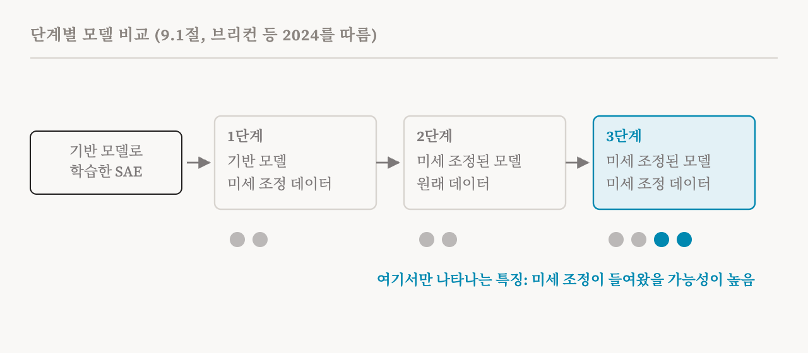
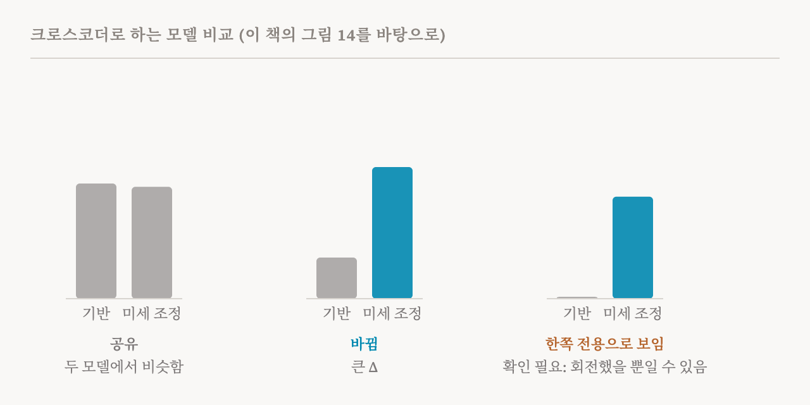

지금까지 이 연재는 한 번에 모델 하나를 살펴보았습니다. 이번 편은 이 책의 9.1절(77–79쪽)을 다룹니다. 이 책의 9장은 표현에 관해 세 가지 질문을 던지는데, 그 첫째입니다. 두 모델 사이에서 무엇이 다른가? (나머지 둘, 곧 정보가 어디에 저장되는지와 그것을 어떻게 조종하는지는 25편에서 다룹니다.)
왜 모델을 비교하는가
이 책의 동기는 실용적입니다. 보상 해킹(reward hacking), 곧 모델이 학습의 기준이 되는 측정값의 허점을 이용하는 행동이나, 아첨(sycophancy), 곧 사용자가 듣고 싶어 하는 말을 하는 행동처럼 걱정스러운 행동 상당수는 미세 조정 중에 생겨납니다. 그래서 위험한 모델이 배포되지 않도록, 미세 조정이 어떤 특징과 회로를 들여오거나 키우는지 지켜보는 것이 중요합니다. 모델 비교는 그 가운데 일부를 찾아내려 합니다.
이 책의 정의에 따르면 모델 비교는 두 모델 사이에서 특징이나 회로의 차이를 찾습니다. 그 차이는 한 모델에만 있는 특징이나 회로일 수도 있고, 둘 다 가진 것이 쓰이는 방식의 차이일 수도 있습니다.
오래된 질문, 다른 목표
신경망을 비교하는 일 자체는 새롭지 않습니다. 앞선 연구 흐름은 상관관계, 정준 상관 분석, 그리고 CKA 같은 커널 기반 점수, 곧 9편의 표현 유사도 지표로 두 신경망의 내부 표현이 얼마나 닮았는지 쟀습니다. 이 연구는 주로 수렴 학습(convergent learning), 곧 서로 다른 무작위 시작점에서 학습한 두 모델이 순서를 바꾸거나 회전하는 정도의 차이만 두고 같은 표현을 배우는지에 관한 것이었습니다. 이 책은 모델 비교를 이것과 구별합니다. 유사도 지표는 전체적인 점수를 줍니다. 모델 비교는 특정한 학습 단계가 들여오거나, 키우거나, 다른 용도로 바꾼 구체적인 특징이나 회로를 찾습니다.
이 책은 모델 비교가 쓰인 곳을 나열합니다. 미세 조정과 증류의 효과, 구조 사이의 차이, 사전 학습 중에 개념이 바뀌는 과정, 그리고 언어 모델에 이미지까지 학습시킬 때 더해지는 시각 전용 특징을 찾아 없애거나 조종하는 일입니다.
사전으로 비교하기
10편부터 13편까지의 SAE와 그 친척들, 곧 딕셔너리 학습이 자연스러운 도구입니다. 두 모델이 구조가 같다면, 예를 들어 기반 모델과 지시 따르기용으로 조정한 버전이거나 한 학습의 여러 체크포인트라면, 같은 토큰에 대한 두 모델의 활성값 차이로 희소 오토인코더나 트랜스코더를 학습시켜 그 특징이 무엇이 바뀌었는지 나타내게 할 수 있습니다. 더 단순한 기준선은 기반 모델로만 SAE를 학습시키고, 그것을 두 모델을 재는 고정된 특징 집합으로 쓰는 것입니다. 체크포인트들이 이어질 때는 각 체크포인트의 SAE를 앞 체크포인트의 SAE에서 출발해 학습시켜서, 학습 내내 특징들이 짝이 맞게 유지되도록 하는 방법도 있습니다. 그다음 공유된 프롬프트 묶음에서 차이를 재고, 미세 조정된 모델에서 훨씬 강하게 켜지는 특징은 그것에 개입해서 시험할 수 있습니다. 2026년의 한 연구는 이렇게 해서 정렬에서 벗어난 행동을 일으키는 특징을 찾았습니다.
모델 때문인가, 데이터 때문인가
미묘한 문제가 하나 있습니다. 미세 조정된 모델에서 보이는 특징이 정말로 미세 조정이 들여온 것인지, 아니면 미세 조정 데이터가 보통의 텍스트와 달라 보여서 나타났을 뿐인지 가려내는 문제입니다. 2024년의 한 연구는 둘을 가르는 단계별 비교(stage-wise diffing)를 제안했습니다. 기반 모델로 학습시킨 SAE를 가져와 세 단계에 걸쳐 학습을 이어 갑니다. 먼저 기반 모델과 미세 조정 데이터로, 다음에 미세 조정된 모델과 원래 데이터로, 마지막으로 미세 조정된 모델과 미세 조정 데이터로 학습시킵니다. 마지막 단계에서만 나타나는 특징은 미세 조정이 만든 것일 가능성이 높습니다. 옛 모델에 새 데이터를 주었을 때도, 새 모델에 옛 데이터를 주었을 때도 나타나지 않았기 때문입니다.

구조가 다른 모델을 잇는 크로스코더
SAE는 두 모델의 활성값 크기가 같아야 합니다. 예를 들어 모델의 세대나 크기에 걸쳐 경향을 추적하려고 구조가 다른 모델을 비교할 때는 그렇지 않을 수 있습니다. 13편에서 소개한 크로스코더가 이 문제를 풉니다. 크로스코더는 입력 크기가 다른 모델마다 따로 인코더를 두고, 두 모델을 공유된 특징 공간들로 사영할 수 있습니다. SAE에 견준 크로스코더의 주된 장점이 바로 이 구조를 가로지르는 비교이지만, 기반 모델과 미세 조정된 모델, 사전 학습의 여러 체크포인트에도 쓰였습니다.

이 책의 실습 노트북은 두 모델에 대해 미리 학습된 크로스코더를 불러와, 그 특징들을 공유 특징과 한 모델 전용 특징으로 나눕니다.
관련된 접근은 표현이 어떻게 다른지가 아니라 계산이 어떻게 바뀌는지를 모델링합니다. 2026년의 한 연구는 트랜스코더로 보정 항을 학습해서, 이것을 기반 모델의 MLP에 더하면 전체 모델 안에서 미세 조정된 MLP가 하는 일을 재현하게 했습니다. 활성값을 비교하는 대신, 미세 조정이 MLP의 계산을 어떻게 바꿨는지에 대한 근사를 학습하는 것입니다.
거짓 양성 문제
사전에 기댄 모든 비교는 12편의 걱정을 함께 안고 있습니다. 희소 분해가 충실하지 않을 수 있다는 것입니다. 이렇게 찾은 특징은 실제 표현이나 그 인과적 역할을 반영하지 않을 수 있습니다. 이 책의 예는 이렇습니다. 미세 조정된 모델에서는 '이전의 잘못을 고백하기'에 대한 SAE 특징을 찾았지만 원래 모델에서는 찾지 못했다고 해서, 미세 조정된 모델이 그 특징을 쓴다는 것이 증명되지는 않습니다. 원래 모델에서 그 특징이 없어 보인다고 해서, 원래 모델에 그런 행동 쪽으로 조종할 수 있는 표현이 없다는 것이 증명되지도 않습니다.
이 책은 그 위험을 경고 상자로 정리합니다. 사전 기반 방법은 어떤 특징이 한 모델에만 있다고 잘못 보고할 수 있습니다. 원인의 일부는 학습 목표 자체에 있을 수 있습니다. 2025년의 한 연구는 L1 벌점으로 학습한 크로스코더가 새로워 보이는 특징을 지어낼 수 있음을 보였고, 11편의 배치 Top-k 변형으로 이를 줄이려 했습니다. 그래도 거짓 양성은 남을 수 있습니다. 미세 조정 중에 어떤 특징을 나타내는 방향이 회전할 수 있는데, 지금의 사전 방법은 새로 생긴 특징과 그저 다르게 표현된 특징을 구별하지 못합니다. 그래서 한 모델에만 있는 것처럼 보이는 특징은 더 확인해야 할 가설로 다뤄야 합니다.
가중치 없이 비교하기
마지막으로, 중요한 모델 상당수는 닫혀 있습니다. 가중치도 활성값도 볼 수 없습니다. 2026년의 한 연구는 언어 모델이 두 모델의 행동 차이에 관한 가설을 평범한 말로 만들어 낼 수 있음을 보였습니다. 같은 프롬프트에 대한 두 모델의 응답을 모으고, 차이를 뽑아내고, 묶고, 요약하는 방식입니다. SAE 기반 방법과 비교하면, 많은 지표에서 그와 맞먹으면서 더 추상적인 행동 수준의 차이를 찾아냈습니다. 기계적인 방법은 아니지만, 강한 행동 기반 기준선이 얼마나 많은 것을 할 수 있는지 보여 주며, 34편에서 이 점으로 돌아옵니다.
| 접근 | 무엇을 비교하나 | 언제 맞나 | 주된 주의점 |
|---|---|---|---|
| 표현 유사도(CCA, CKA) | 표현의 전체적인 유사성 | 모델들이 수렴하는지 물을 때 | 구체적인 변화가 아니라 점수를 줌 |
| 활성값 차이에 대한 SAE, 또는 고정된 기반 SAE | 구조가 같은 두 모델의 특징 | 기반 대 미세 조정, 또는 체크포인트 | 희소 분해가 충실하지 않을 수 있음 |
| 단계별 SAE 미세 조정 | 미세 조정이 더한 특징 | 모델의 변화와 데이터의 변화를 가를 때 | 학습을 여러 번 해야 함 |
| 크로스코더 | 모델 사이의 공유 특징과 전용 특징 | 구조, 크기, 세대가 다를 때 | '전용' 특징을 지어낼 수 있음. 회전한 특징이 새것처럼 보임 |
| 트랜스코더 어댑터 | 미세 조정이 MLP의 계산을 어떻게 바꿨는지 | 계산의 변화를 이해할 때 | 구성 요소를 하나씩 근사함 |
| 언어 모델 기반 비교 | 행동의 차이를 말로 | API로만 접근할 수 있는 닫힌 모델 | 행동 기반이지 기계적이지 않음 |
| 용어 | 뜻 |
|---|---|
| 모델 비교 | 두 모델 사이에서 특징이나 회로의 차이를 찾는 것 |
| 미세 조정 | 새로운 데이터나 목표로 모델을 더 학습시키는 것 |
| 보상 해킹 | 모델이 최대화하도록 학습된 측정값의 허점을 이용하는 것 |
| 수렴 학습 | 따로 학습한 모델들이 같은 표현을 배우는 것 |
| CKA | 두 표현 집합이 얼마나 닮았는지 매기는 널리 쓰이는 점수 |
| 기반 모델과 미세 조정된 모델 | 미세 조정 전과 후의 모델 |
| 단계별 비교 | 미세 조정이 들여온 것을 가려내려고 SAE의 학습을 단계적으로 이어 가는 것 |
| 모델 전용 특징 | 두 모델 가운데 하나에만 있는 것처럼 보이는 특징 |
| 특징 회전 | 특징의 방향이 모델 사이에서 바뀌는 것. 새로운 특징처럼 보일 수 있음 |
| 가중치가 닫힌 모델 | 가중치를 공개하지 않은 모델 |
25편에서는 모델 안에서 지식이 어디에 저장되는지, 그리고 표현을 조종해서 행동을 어떻게 바꿀 수 있는지 묻습니다.